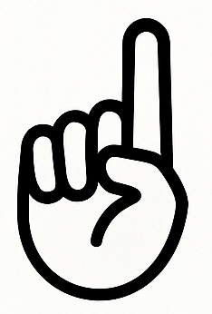
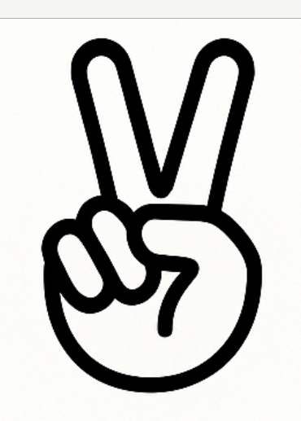
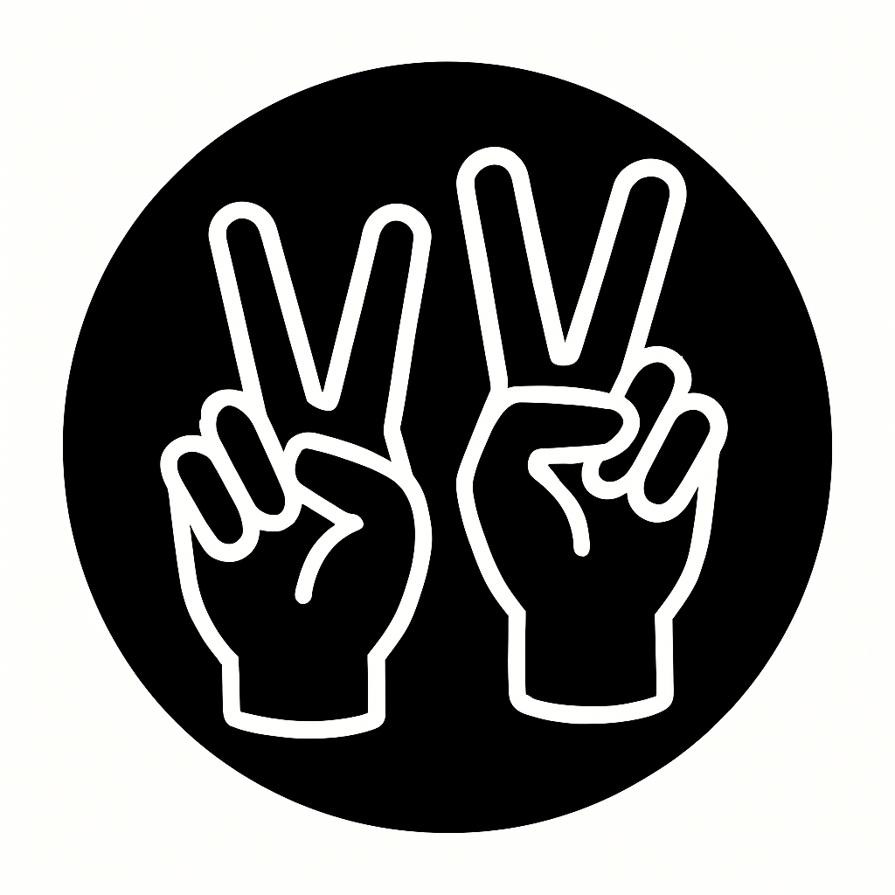
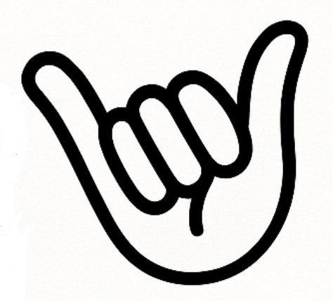
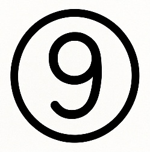
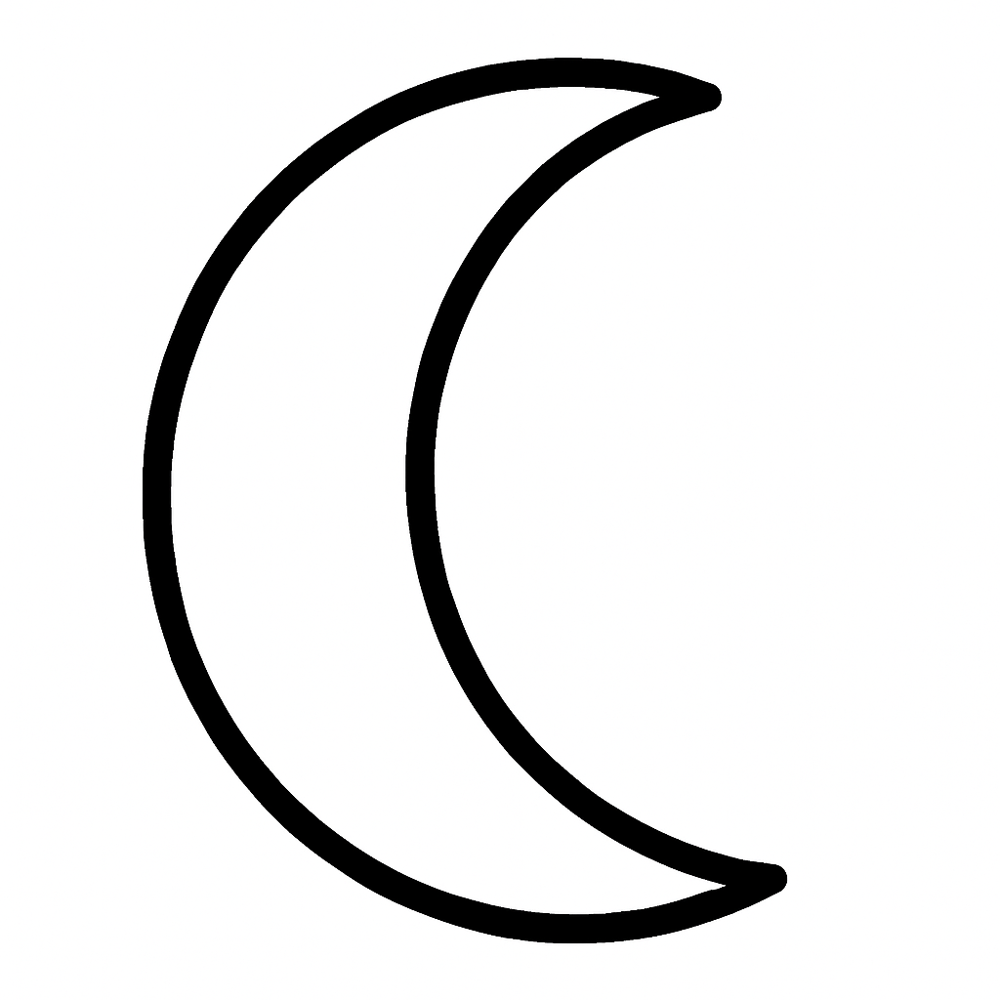

一（イチ / ひとつ）
- 一日【いちにち】– one day
- 一番【いちばん】– number one
- 一生【いっしょう】– one’s whole life
- 一人【ひとり】– one person
- 一つ【ひとつ】– one (thing)
- 一息【ひといき】– one breath / a short rest

二（ニ / ふたつ）
- 二人【ふたり】– two people
- 二月【にがつ】– February
- 二重【にじゅう】– double
- 二度【にど】– twice
- 第二【だいに】– second (in order)

三（サン / みっつ）
- 三人【さんにん】– three people
- 三日【みっか】– third day
- 三角【さんかく】– triangle
- 三年生【さんねんせい】– third-year student
- 三倍【さんばい】– triple

四（シ / よっつ）
- 四日【よっか】– fourth day
- 四季【しき】– four seasons
- 四角【しかく】– square
- 四年【よねん】– four years
- 四人【よにん】– four people

五（ゴ / いつつ）
- 五月【ごがつ】– May
- 五人【ごにん】– five people
- 五回【ごかい】– five times
- 五感【ごかん】– five senses
- 五百【ごひゃく】– five hundred

六（ロク / むっつ）
- 六月【ろくがつ】– June
- 六人【ろくにん】– six people
- 六回【ろっかい】– six times
- 第六【だいろく】– sixth (in order)

七（シチ / ななつ）
- 七月【しちがつ】– July
- 七人【しちにん】– seven people
- 七夕【たなばた】– Star Festival
- 第七【だいなな】– seventh (in order)

八（ハチ / やっつ）
- 八月【はちがつ】– August
- 八人【はちにん】– eight people
- 八百【はっぴゃく】– eight hundred
- 第八【だいはち】– eighth (in order)

九（キュウ / ここのつ）
- 九月【くがつ】– September
- 九人【きゅうにん】– nine people
- 九回【きゅうかい】– nine times
- 第九【だいきゅう】– ninth (in order)

十（ジュウ / とお）
- 十月【じゅうがつ】– October
- 十分【じゅうぶん】– enough
- 十人【じゅうにん】– ten people
- 十回【じゅっかい】– ten times
- 第十【だいじゅう】– tenth (in order)

口 (コウ / くち)
- 人口【じんこう】– population (Onyomi)
- 口調【くちょう】– tone of voice, manner of speaking (Onyomi)
- 口実【こうじつ】– excuse, pretext (Onyomi)
- 口【くち】– mouth (standalone kunyomi)
- 入口【いりぐち】– entrance (Kunyomi compound)
- 出口【でぐち】– exit (Kunyomi compound)

日 (ニチ・ジツ / ひ・か)
- 日本【にほん／にっぽん】– Japan (Onyomi)
- 日記【にっき】– Diary, journal (Onyomi)
- 祝日【しゅくじつ】– National holiday (Onyomi)
- 日【ひ】– Sun, day (standalone kunyomi)
- 今日【きょう】– Today (Kunyomi irregular compound)
- 日焼け【ひやけ】– Sunburn, suntan (Kunyomi compound)

月 (ゲツ・ガツ / つき)
- 月曜日【げつようび】– Monday (Onyomi)
- 今月【こんげつ】– This month (Onyomi)
- 満月【まんげつ】– Full moon (Onyomi)
- 月【つき】– Moon, month (standalone kunyomi)
- 月明かり【つきあかり】– Moonlight (Kunyomi compound)
- お月見【おつきみ】– Moon viewing (Kunyomi + honorific)

目 (モク / め・ま)
- 目的【もくてき】– Purpose, goal (Onyomi)
- 注目【ちゅうもく】– Attention, notice (Onyomi)
- 目標【もくひょう】– Target, aim (Onyomi)
- 目【め】– Eye (standalone kunyomi)
- 目玉【めだま】– Eyeball, a highlight (Kunyomi compound)
- 一目【ひとめ】– A glance, a glimpse (Kunyomi compound)

田 (デン / た)
- 田園【でんえん】– Countryside, rural district (Onyomi)
- 田畑【たはた】– Fields and paddies (Kunyomi compound)
- 田舎【いなか】– Countryside, hometown (Kunyomi compound)
- 水田【すいでん】– Rice paddy (wet field) (Mixed reading)
- 田んぼ【たんぼ】– Rice field (colloquial kunyomi)
- 田中【たなか】– Tanaka (common surname, "central field")